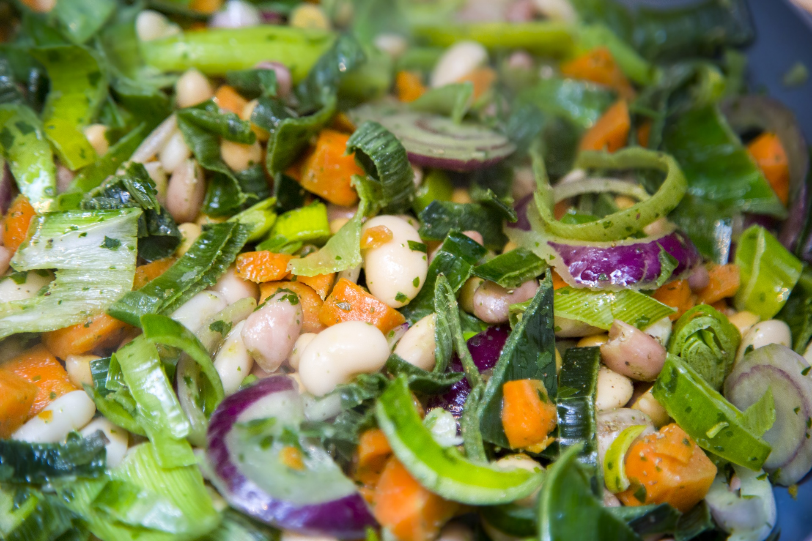

Bean Salad

Description
A cold salad, kinda like a pasta salad but with beans and vegetables in marinade-like dressing
One great thing about this salad is you can use whatever you have on hand!
Ingredients
- can of beans
- cucumbers
- tomatoes
- vinegrette
- herbs
Steps
- rinse beans
- cut cucumber and tomatoes into small pieces
- combine beans and vegetables in large bowl, toss with vinegrette
- season with herbs
- let sit for 1 hour so beans and vegetables can marinate, consider marinading in fridge so salad is cold